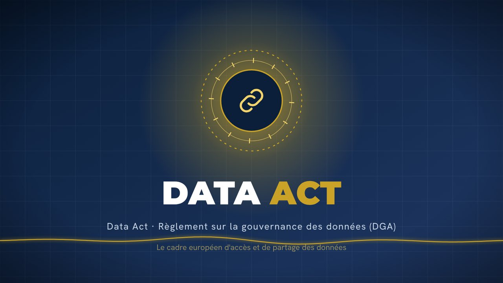

ARG
ARGARGOS › La réglementation en 4 minutes › Data Act et DGA
Data Act et DGA en 4 minutes: Belgique : l'autorité se prépare
Le Data Act et le règlement sur la gouvernance des données forment le cadre européen d'accès et de partage. La donnée industrielle n'appartient plus, par défaut, au fabricant. En Belgique, l'autorité se prépare, mais les obligations sont là.

- 0:00À qui ?
- 0:12Le règlement
- 0:31Au niveau national
- 0:50Data Act
- 1:01Obligations
- 1:25Le DGA
- 1:43Dates
- 2:04Europe
- 2:24L'autorité
- 2:41Que faire
Points clés
- 12.9.2025 dans toute l'Union européenne
- 24.9.2023 le DGA s'applique
- 12.9.2025 le Data Act s'applique
- 12.9.2026 accès dès la conception
- 12.1.2027 fin des frais de changement de cloud
- IBPT Futur régulateur
- SPF Économie En appui
- APD Données personnelles
Transcription
Texte complet de la voix off
0:00 · À qui ?
Ton tracteur produit des données. Tes machines aussi. Ton ascenseur, ta voiture, ton compteur. Mais c'est le fabricant qui les garde. À qui appartiennent-elles, vraiment ?
0:12 · Le règlement
Le règlement européen sur les données, le Data Act, s'applique dans toute l'Union depuis le 12 septembre 2025. L'utilisateur d'un produit connecté peut accéder gratuitement à ses données, et les partager. Et dès le 12 janvier 2027, aucun fournisseur de cloud ne pourra facturer le départ.
0:31 · Au niveau national
En Belgique, l'autorité se prépare, mais les obligations sont là. L'IBPT prépare la réforme de son statut pour devenir l'autorité. Avec le SPF Économie. L'APD veille aux données personnelles. Les droits peuvent déjà être invoqués devant le juge. Et les clients le demandent déjà.
0:50 · Data Act
Le Data Act et le règlement sur la gouvernance des données forment le cadre européen d'accès et de partage. La donnée industrielle n'appartient plus, par défaut, au fabricant.
1:01 · Obligations
Ce qu'il exige du fabricant. Concevoir le produit pour que l'utilisateur accède à ses données. Informer avant le contrat des données produites et de l'accès. Partager avec le tiers choisi par l'utilisateur, à des conditions équitables. Et protéger les secrets d'affaires par des mesures convenues. Les données non personnelles, seulement selon l'accord avec l'utilisateur.
1:25 · Le DGA
Le règlement sur la gouvernance des données complète le tableau. La réutilisation de données publiques protégées. Des intermédiaires de données neutres et enregistrés. Et l'altruisme en matière de données, pour l'intérêt général. L'Omnibus numérique propose de l'intégrer au Data Act.
1:43 · Dates
Les dates. 24 septembre 2023 : le règlement sur la gouvernance des données s'applique. 12 septembre 2025 : le Data Act s'applique. 12 septembre 2026 : l'accès dès la conception. Et 12 janvier 2027 : fin des frais de changement de cloud.
2:04 · Europe
En Europe, la carte est contrastée. L'Allemagne : plus de 700 plaintes. Les Pays-Bas : loi et autorité. Le Danemark : amendes par les juges. La France : sortie du cloud à zéro euro. La Belgique prépare son autorité. Et l'Espagne, le Portugal et l'Italie sont encore sans autorité.
2:24 · L'autorité
En Belgique, le futur régulateur est l'Institut belge des services postaux et des télécommunications. Le SPF Économie l'accompagne. En attendant, le juge peut faire respecter les droits. Et les données personnelles restent sous le contrôle de l'APD.
2:41 · Que faire
Que faire maintenant. Des fiches par produit, une procédure d'accès, des contrats équitables, un plan de sortie du cloud. ARGOS vérifie que l'accès fonctionne vraiment, avec des tests sur les systèmes réels et des preuves pour le client, ou le juge. Data Act : les données au service de ceux qui les produisent.
Questions fréquentes
Qu’est-ce que Data Act et DGA ?
Le Data Act et le règlement sur la gouvernance des données forment le cadre européen d'accès et de partage. La donnée industrielle n'appartient plus, par défaut, au fabricant. Le règlement européen sur les données, le Data Act, s'applique dans toute l'Union depuis le 12 septembre 2025. L'utilisateur d'un produit connecté peut accéder gratuitement à ses données, et les partager. Et dès le 12 janvier 2027, aucun fournisseur de cloud ne pourra facturer le départ.
Qu’exige Data Act et DGA ?
Ce qu'il exige du fabricant. Concevoir le produit pour que l'utilisateur accède à ses données. Informer avant le contrat des données produites et de l'accès. Partager avec le tiers choisi par l'utilisateur, à des conditions équitables. Et protéger les secrets d'affaires par des mesures convenues. Les données non personnelles, seulement selon l'accord avec l'utilisateur.
Quelles sont les dates clés ?
Les dates. 24 septembre 2023 : le règlement sur la gouvernance des données s'applique. 12 septembre 2025 : le Data Act s'applique. 12 septembre 2026 : l'accès dès la conception. Et 12 janvier 2027 : fin des frais de changement de cloud.
Quelle est la situation en Belgique ?
En Belgique, l'autorité se prépare, mais les obligations sont là. L'IBPT prépare la réforme de son statut pour devenir l'autorité. Avec le SPF Économie. L'APD veille aux données personnelles. Les droits peuvent déjà être invoqués devant le juge. Et les clients le demandent déjà. En Belgique, le futur régulateur est l'Institut belge des services postaux et des télécommunications. Le SPF Économie l'accompagne. En attendant, le juge peut faire respecter les droits. Et les données personnelles restent sous le contrôle de l'APD.
Que doit faire une entreprise dès maintenant ?
Que faire maintenant. Des fiches par produit, une procédure d'accès, des contrats équitables, un plan de sortie du cloud. ARGOS vérifie que l'accès fonctionne vraiment, avec des tests sur les systèmes réels et des preuves pour le client, ou le juge. Data Act : les données au service de ceux qui les produisent.
Sources officielles
- Règlement (UE) 2023/2854 (Data Act) (EUR-Lex)
- Règlement (UE) 2022/868 (DGA) (EUR-Lex)
- Fiches réglementaires de Software in a Box
À voir aussi
 CyFun et ISO
CyFun et ISOCyFun et ISO en 4 minutes: Une preuve n'est pas un formulaire
 RGPD
RGPDRGPD en 4 minutes: Ce qui est le plus sanctionné, c'est l'essentiel
 EHDS
EHDSEHDS en 4 minutes: Pour les hôpitaux et les fabricants
Voix et musique générées par intelligence artificielle (art. 50 du règlement sur l’IA). Information générale, pas un conseil juridique ; situation à novembre 2026, d’après les fiches réglementaires de Software in a Box. Clips vidéo sous licence Envato.
Pour intégrer cette présentation sur un autre site : <iframe src="https://argos.softwareinabox.eu/fr-be/reglementation/data-act-dga/presentacion/?embed=1" width="960" height="540" allow="autoplay; fullscreen" title="Data Act et DGA en 4 minutes: Belgique : l'autorité se prépare"></iframe> avec un lien vers cette page.
Aussi disponible en: EspañolDeutschFrançaisItalianoNederlandsNederlands (België)PortuguêsDansk